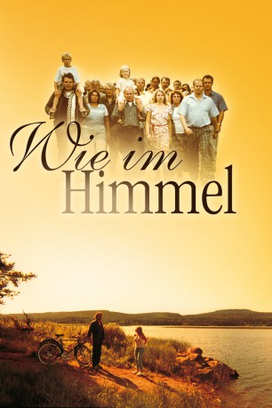

#985 Wie im Himmel
Alternativ: As It Is in Heaven (Englischer Titel)
Auszeichnungen: für 1 Oscars nominiert
 
 IMDB-Wertung: 7.6 / 10
IMDB-Wertung: 7.6 / 10  Metascore: 0
Metascore: 0 
Als der renommierte Dirigent Daniel Dareus einen schweren körperlichen Zusammenbruch erleidet, beendet er seine internationale Karriere und zieht sich in sein Heimatdorf in Nordschweden zurück. Obwohl er eigentlich seine Ruhe haben will, lässt er sich überreden, den örtlichen Kirchenchor zu leiten. Nach und nach erfährt Daniel so von den Sorgen und Nöten des bunt zusammengewürfelten Chors. Schließlich gelingt es ihm, das ganze Dorf mit seiner Begeisterung für die Musik anzustecken und den grauen Alltag vergessen zu machen.
Jahr: 2004
Dauer: 133 Minuten
FSK: 12
Land: Schweden Studio: Prokino FilmverleihTonspuren:
Untertitel:
Auflösung: 1080p (1920x1040) Größe: 8140 MB
Genre: Komödie, Drama, Musik, Liebe
Regisseur: Kay Pollak
Drehbuch: Anders Nyberg, Ola Olsson, Carin Pollak, Kay Pollak, Margaretha Pollak
Soundtrack: Stefan Nilsson
Darsteller:
 Michael Nyqvist als Daniel Daréus
Michael Nyqvist als Daniel Daréus Frida Hallgren als Lena
Frida Hallgren als Lena- Lennart Jähkel als Arne
- Ingela Olsson als Inger
- Per Morberg als Conny
- André Sjöberg als Tore
 Alexandra Hummingson als Member of choir / Extra , uncredited
Alexandra Hummingson als Member of choir / Extra , uncredited- Helen Sjöholm als Gabriella
- Niklas Falk als Stig
- Ylva Lööf als Siv
- Mikael Rahm als Holmfrid
- Barbro Kollberg als Olga
- Axelle Axell als Florence
- Lasse Pettersson als Erik
- Ulla-Britt Norrman-Olsson als Amanda
- Nils-Anders Vallgårda als Gordon, Gabriella's Son
- Lotten Vallgårda als Jennnifer, Gabriella's Daughter
- Mircea Crisan als Agenten
- Kristina Törnqvist als Mamma
- Johannes Schantz als Daniel 7 år
- Anna Lundström als Daniel 14 år
- Verena Buratti als Loredana , uncredited
Datei: X:\2-Dilogie(N-Z)\Wie im Himmel - Wie auf Erden\Wie im Himmel (2004, FSK12, 1920x1040).mkv seit 03.05.2015
Festplatte: HD Collection-2(A-Z)-3(A-M)
 Alle Filme aus Gruppe '2-Dilogie(N-Z)\Wie im Himmel - Wie auf Erden'
Alle Filme aus Gruppe '2-Dilogie(N-Z)\Wie im Himmel - Wie auf Erden'